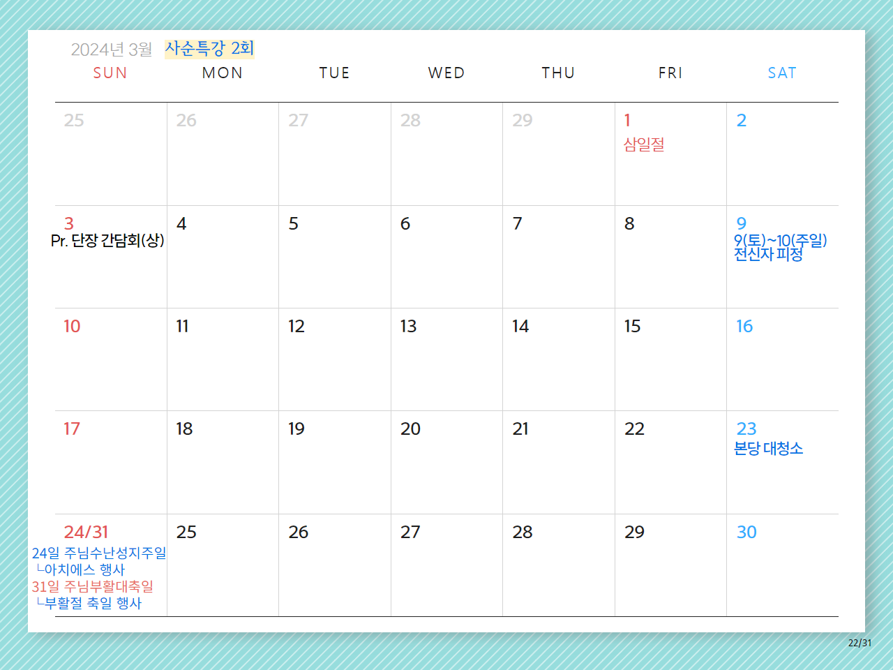
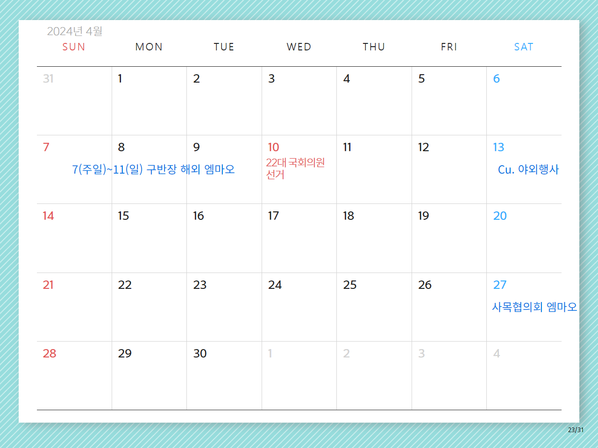

2024년 2월 사목협의회 진행 순서
시작 기도(시노드를 위한 기도 Adsumus Sancte Spiritus)

신부님 전달사항
마곡수명산성당카페 Open 점검
홍보분과
2월 19일(월) ~ 22일(목) 복사단 해외캠프
청소년분과
3월 9일(토) ~ 10일(일) 전신자 피정
교육분과, 신심분과

☞푸른누리수련원 피정 및 버스 포함 총비용은 인당 약 10만 원 예상
최민석 베드로 신부님 서품 기념 미사 및 식사 초대
다음 주일, 11일에는 마곡수명산성당에서 특별한 행사가 있습니다. 최민석 베드로 신부님께서 새로운 사제로 서품을 받으시고, 이를 기념하여 교중미사를 집전하실 예정입니다. 미사 후에는 신부님과 함께하는 식사 자리가 마련되어 있습니다. 사목위원님들께서는 이 의미 있는 자리에 참석하셔서 새로운 시작을 축하해 주시길 바랍니다. 여러분의 따뜻한 관심과 기도가 큰 힘이 될 것입니다.
사제 수품자를 위한 기도
○ 착한 목자이신 주님,
주님께서는 원하는 이들을
부르고 파견하시어
구원과 생명의 열매가 날로 풍성하도록 이끄시나이다.
● 이제 하느님과 당신의 백성을 위해
일생을 오롯이 바치며 살아갈 봉사자로 뽑으신
새 사제를 위하여
마음 모아 기도하나이다.
○ 섬김을 받으러 오시지 않고
섬기러 오신 주님을 닮아가며,
매일의 삶이 하느님을 찬미하고 복음을 증거하는
거룩한 열정으로 가득 차게 하소서.
● 또한 가난하고 어려운 이들과 하나 되신
주님을 본받아
우리 시대의 아픔을 치유하는 사명에 헌신하여
가난한 이들을 통해 하느님 나라가 드러나게 하소서.
○ 주님, 청하오니
새 사제들과 함께 하시어
어떤 어려움에도 흔들리지 않고
굳세게 주님의 부르심에 응답하며 살게 하소서.
● 이 땅의 첫 사제이신 성 김대건 안드레아와 한국 순교 성인들이여,
○ 저희를 위하여 빌어주소서.
● 한국 교회의 주보이신 성모 마리아,
○ 저희를 위하여 빌어주소서.
◎ 아멘
마침기도(영광송)

